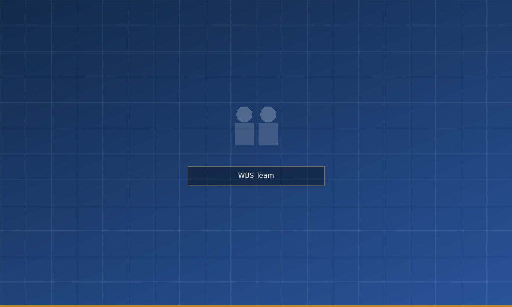

Built from the Ground Up, Since 1989
Wingette, Bodgit & Scarper was founded in Dublin in 1989 by Reginald Wingette, a National College of Art and Design graduate with a gift for seeing what clients needed — often before they did. Starting as a two-person consultancy in a shared Rathmines office, WBS grew steadily through the 1990s, picking up public sector commissions, IDA-supported product development projects, and a growing reputation for delivering against the brief.
In 2000, WBS expanded into digital, acquiring a small software house that had been building e-government tools. In 2007, the firm completed the purchase of an injection-moulding operation in Bray, Co. Wicklow — establishing the manufacturing capability that now forms a core part of the group's offer.
Today, WBS employs approximately 340 people across three sites and three specialist divisions. The firm remains privately held, with Reg Wingette serving as Non-Executive Chairman and his daughter Charlene Bodgit leading the business as Chief Executive Officer.
